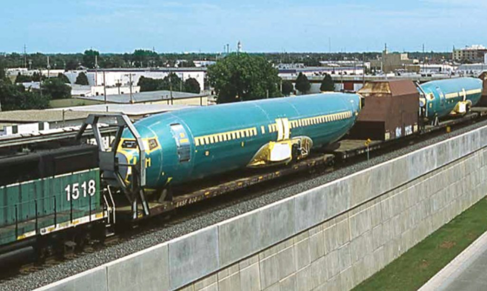
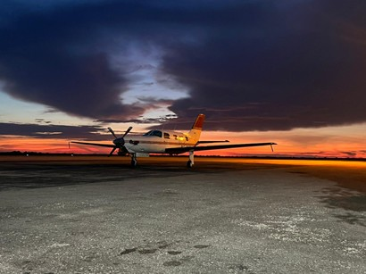
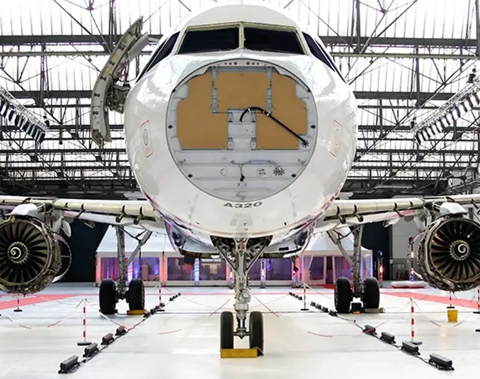
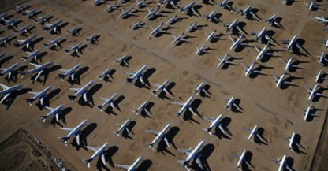

Overzicht van logistiek, demontage en recyclageprocessen aan het einde van de levensduur van een vliegtuig.




1. Transport en opslag
Voor er echt aan recyclage kan gedaan worden moeten er eerst logistieke aspecten bekeken worden. Vaak zijn de processen minder voor de hand liggend dan men zou verwachten, dus is verdere toelichting belangrijk.
1.1 Transport
Transport is meestal ingewikkelder dan simpelweg naar de opslagplaats vliegen, omdat het vliegtuig defect of te verouderd kan zijn om normaal te kunnen vliegen.
1.1.2 Ferry flight
Een ferry flight (ook wel afscheidsvlucht) is de laatste vlucht die een vliegtuig maakt. Onder normale omstandigheden gebeurt dit zonder passagiers of vracht en gaat de vlucht naar één van de vele vliegtuigkerkhoven. Voor dit soort vluchten zijn speciale papieren nodig en de piloot moet getraind zijn om op een kortere landingsbaan te landen.
1.1.3 Speciaal transport
Als het vliegtuig niet meer luchtwaardig is, wordt het proces complexer: het toestel moet ter plaatse gedemonteerd worden en stuk per stuk apart vervoerd worden. Dit is niet alleen een logistieke uitdaging, maar brengt ook een grotere ecologische impact met zich mee.
1.2 Opslag
Het einde van het leven van een commercieel vliegtuig wordt bijna altijd doorgebracht op één van de ‘boneyards’ (vliegtuigkerkhoven): gigantische opslagplaatsen waar honderden tot duizenden vliegtuigen kunnen worden opgeslagen. Ze kunnen hier jaren blijven staan voor ze worden gerecycleerd of doorverkocht aan een andere onderneming.
Door het droge klimaat en de stabiele ondergrond worden vaak opgedroogde zoutmeren gebruikt. De grond is goedkoop en daardoor geschikt om een grote opslagplaats te bouwen.
2. Demontage
2.1 Waardevolle onderdelen
De eerste stap in het ontmantelingsproces is om elk onderdeel dat nog werkt en waardevol is volledig te demonteren, verwijderen en door te verkopen op een tweedehandsmarkt. Dit omvat o.a. motoren, de auxiliary power unit (APU), elektrische componenten en het landingsgestel (door de hoge concentratie aan titanium).
2.2 Het interieur strippen
Na het verwijderen van externe componenten worden teams naar binnen gestuurd om zoveel mogelijk van het interieur weg te halen. Zo worden vaak kilometers aan koperdraad verwijderd, samen met stoelen, de keuken, cockpit en isolatiemateriaal (vaak kevlar of glasvezel).
2.3 Het frame van het vliegtuig
De grootste taak in het proces is het verwerken van wat na stap 1 en 2 overblijft. In deze fase wordt de romp in steeds kleinere en beter hanteerbare stukken gescheurd, tot elk stuk volledig afgebroken is.
2.4 Sorteren van grondstoffen en vervoer
Het sorteerproces wordt steeds strenger om zoveel mogelijk onderscheid te creëren tussen materiaalsoorten. De materialen worden apart vervoerd en eventueel verkocht of gerecycleerd.
Enkele sorteringstechnieken:
- Magnetische scheiding: magnetische onderdelen scheiden van niet-magnetische.
- Sensor-gestuurde scheiding: onderscheid op basis van hoe materialen zichtbaar licht of UV-licht reflecteren.
3. Recyclage
Materialen die niet worden verkocht, worden zo goed mogelijk gerecycleerd. Dit gebeurt via verschillende processen zodat materiaalsoorten gescheiden blijven.
3.1 Metalen
3.1.1 Aluminiumlegeringen
Een groot deel van de buitenste laag van het vliegtuig bestaat uit aluminiumlegeringen (bv. 2000- of 7000-series). Deze bevatten naast aluminium ook andere metalen, waardoor ze moeilijk en inefficiënt te onderscheiden zijn (tijd- en energie-intensief). Daarom is vaak downcycling de enige optie. Het materiaal kan later gebruikt worden in bv. motorblokken of raamkozijnen.
3.1.2 Staal en titanium
Deze materialen komen vooral voor in het landingsgestel en motorrestanten. Door hun hoge prijs en zeldzaamheid worden ze apart gehouden en bijna volledig gerecycleerd.
3.1.3 Elektrische componenten
Elektrische onderdelen bestaan voor een groot deel uit koper (uit bedrading), dat onder de juiste omstandigheden 100% recycleerbaar is. Daarnaast kunnen ook goud, platina, zilver en palladium teruggevonden worden. Deze kunnen doorverkocht worden aan juweliers of elektronicaproducenten.
3.2 Composieten en textielen
Deze materialen zijn bijna onmogelijk te recycleren zonder extreme downcycling. Daarom wordt vaak gekozen om ze naar grote verbrandingsovens te sturen, waar de verbrandingswarmte kan worden omgezet tot elektriciteit.